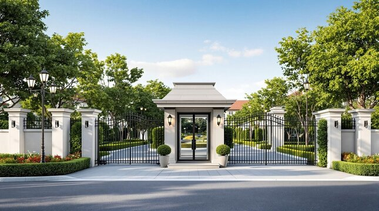

IR Receiver Controlled Gate
Objective:
IR Remote–Based Door and Gate System, designed to open and close gates in a simple and smart way. Traditional gates must be opened manually, which can be difficult, especially when carrying things or driving a vehicle. Our system allows the user to open the gate using an infrared remote, just like using a TV remote. This makes gate operation faster, more convenient, and much more user-friendly.
Students:
1. Nihira – 3A
2. Ronish – 3B
3. Geethika – 3B
4. P. Sarvin – 3B
5. Devash Sachin – 3B
2. Ronish – 3B
3. Geethika – 3B
4. P. Sarvin – 3B
5. Devash Sachin – 3B
